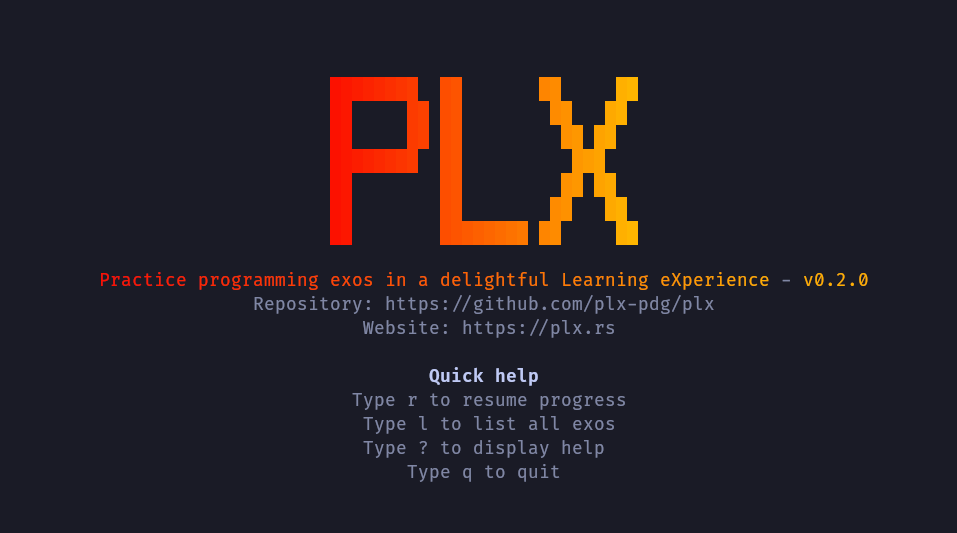
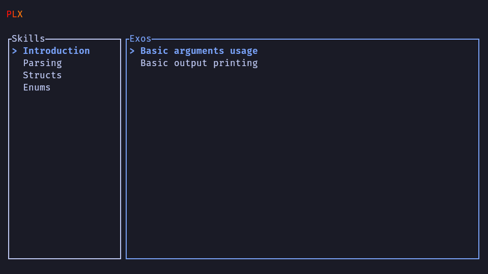
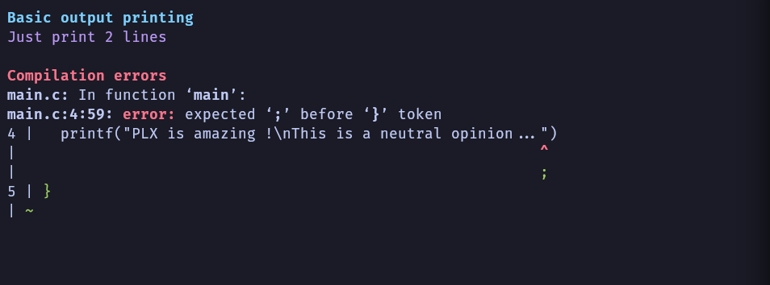
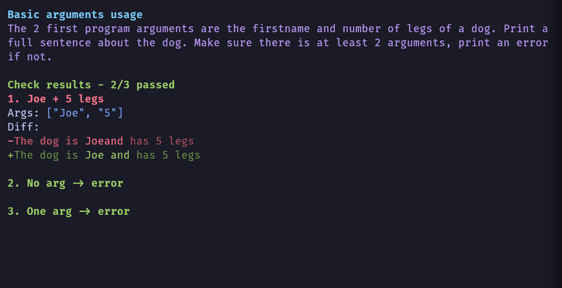
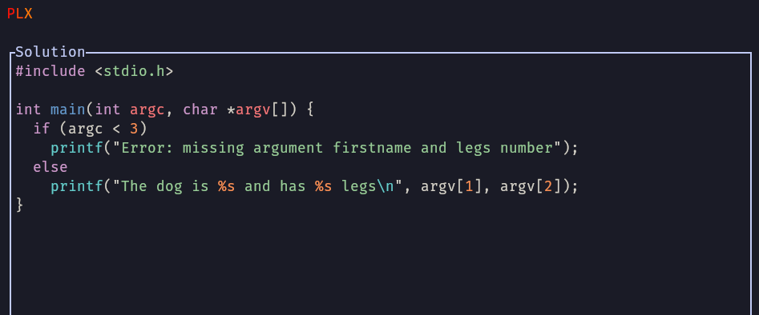

Project status
These are a few notes about the project status. Everything has been done during PDG (Projet De Groupe) during 3 weeks with a team of 4 IT students. As the landing page doesn't include screenshots and project progression details, I thought having a dedicated page could be useful !
Demo
Here are few screenshots of the current UIs built into PLX, it is currently possible to do C and C++ exos (without any compilation dependency) with output checks only.
The home page

The list page with list of skills and exos (fictive course for development purpose)

Showing compilation errors with a few manipulations of the output (absolute path like /home/sam/...../project/exos/main.c have been replaced with just main.c)

Simple output checks to verify basic cases and 2 error cases, with a trivial C program. This is a simple display of an important feature: smart diffing, the possibility to highlight specific words that are changed on a given line and not just indicate red+green lines like Git does.

Once the exo is done (all checks are passing), the solution can be viewed directly in PLX.
This is only a very first working version of PLX, a lot more has to come. It's very cool to see that only 3 weeks is enough to start feeling this new experience 🔥🔥🔥!
Bachelor work
Samuel is going to work on the following big features during ~450 hours during the last semester at HEIG-VD for his bachelor work (February to July 2025). This is an amazing opportunity to continue the project with dedicated time !
- Supporting the DY syntax (invented for Delibay) in PLX to have a common light and delighftul human readable and writable syntax to define and maintain exos
- Allowing teachers to see the code and results of students during a live sessions in class, the code is sent to a central server and sent back to the teacher's PLX so there is an opportunity to see the progress, to give global feedback, create interactions around the various approaches...
If you want to see the progress on this work, you can read more in this Git repository: tb-docs
MVP course
Samuel is currently participating to the MVP course at HEIG-VD, to explore the challenges of IT and programming teachers to see how to help them.
Crunch startupper challenge
Samuel has participated with a team of 4 to the Crunch startupper challenge in from 2025-03-17 to 2025-03-21.
History
- First development during PDG (Projet De Groupe) during 3 weeks with a team of 4 IT students. TODO: more details.